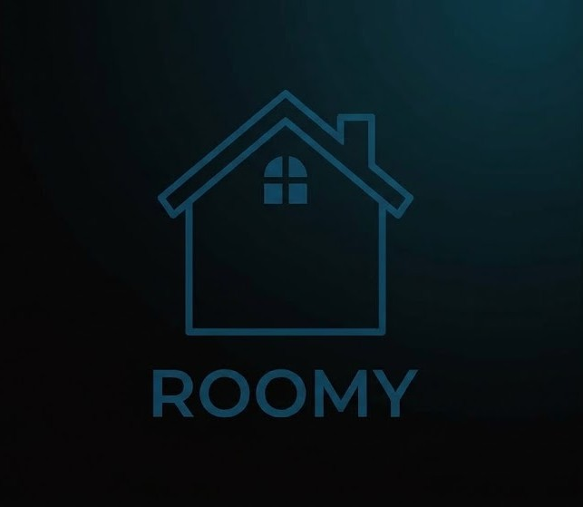
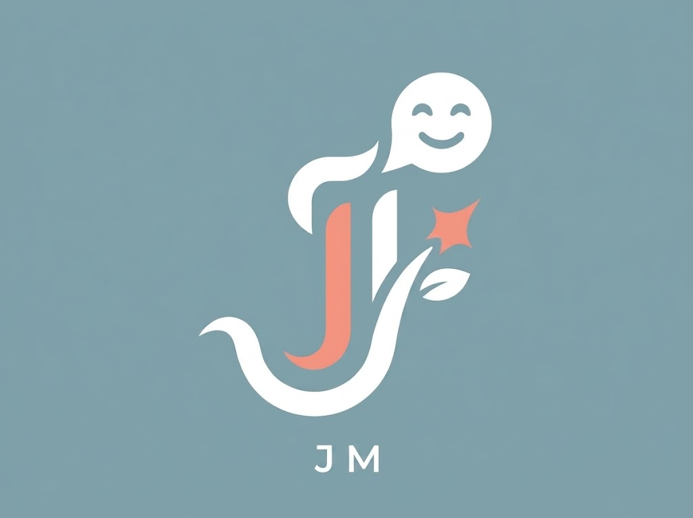
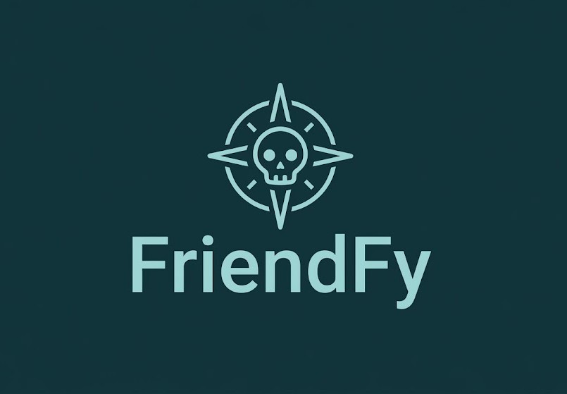

Sobre mí
Estudiante de Ingeniería Informática y DAM. Me apasiona el desarrollo de software y dar vida a mis propios proyectos, desde PWAs hasta asistentes de voz con IA. Cuando no estoy programando, me encontrarás trasteando con el hardware de mi PC, jugando un rato o desconectando de ruta por la naturaleza.
Tecnologías
Experiencia
EBORATIC (UCLM)
Ene 2022 - Sep 2025Gestión Web y Redes Sociales
Mantenimiento de cuentas de redes sociales y contenido del sitio web para la Facultad de Ciencias Sociales en el campus de Talavera de la Reina.
Minsait / Indra
Jul 2022 - Ago 2022Control de Calidad y Base de Datos
Gestión de bases de datos y control de calidad sobre el material electoral para las elecciones generales de Angola 2022.
Universidad de Castilla-La Mancha
Ene 2021 - Dic 2021Prácticas en Servicio IT
Soporte directo a usuarios, control de redes y reparación de hardware en las instalaciones de la universidad.
Proyectos
Roomy (PWA)
Gestión de pisos compartidos
PWA desarrollada para coordinar gastos, organizar tareas de limpieza y gestionar listas de la compra entre compañeros de piso.

Javier Medina Logopeda
Web corporativa para profesional clínico
Diseño y desarrollo de una plataforma accesible y responsive. Incluye catálogo estructurado de servicios, blog dinámico y un sistema optimizado para la captación directa de pacientes.

FriendFy
Plataforma de streaming musical compartida
Aplicación web orientada a la gestión y reproducción de música. Cuenta con un reproductor integrado, buscador en tiempo real y una interfaz fluida inspirada en los líderes del sector para ofrecer la mejor experiencia de usuario.

EasyTest
Aplicación web de ayuda al estudio
Generador de tests automatizado que extrae datos de archivos PDF utilizando una arquitectura serverless con Python y JavaScript.
Formación
Ingeniería Informática
En cursoUCLM
Estudios de grado en Ingeniería Informática.
Desarrollo de Aplicaciones Multiplataforma
En cursoGrado Superior (DAM)
Especialización en desarrollo de software para múltiples dispositivos e interfaces.
Extras
Naturaleza y Vivac
Desarrollador de día y entusiasta del vivac de noche; siempre que puedo me escapo a acampar y disfrutar de la naturaleza para desconectar.
Hardware & Modding
Mantenimiento de equipos, cambio de metal líquido, limpieza de componentes y mecánica básica.
Gaming
Jugador habitual en PC y PS5 (Destiny 2, God of War, InFamous, Warhammer Space Marine 2...)